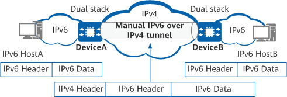

Understanding Manual IPv6 over IPv4 Tunnels
A manual IPv6 over IPv4 tunnel is configured between two border devices, with the source and destination IPv4 addresses statically specified.
A manual tunnel provides a point-to-point connection. If a border device needs to establish tunnels with several devices, manually configuring multiple tunnels on the device is complex. Therefore, manual tunnels apply when two border devices connect only two IPv6 networks.
Figure 1 shows how a manual IPv6 over IPv4 tunnel works.
Figure 1 Schematic diagram of a manual IPv6 over IPv4 tunnel
The following describes the process of HostA accessing HostB:
- An IPv6 packet sent from HostA arrives at DeviceA.
- DeviceA searches its IPv6 routing table for an entry matching the destination address of the IPv6 packet, and discovers that the outbound interface is a tunnel interface.
- DeviceA encapsulates the IPv6 packet into an IPv4 packet. In the IPv4 packet header, the destination address is the source IPv4 address configured for the tunnel on the remote end (that is, DeviceB), and the source address is the source IPv4 address configured for the tunnel on the local end (that is, DeviceA). Then, DeviceA forwards the IPv4 packet from its tunnel interface to DeviceB over the IPv4 network.
- DeviceB decapsulates the received IPv4 packet, searches for a routing entry based on the destination address of the resulting IPv6 packet, and forwards the IPv6 packet to HostB.
- HostB responds to the received IPv6 packet. The response packet is processed in a similar way as the IPv6 packet sent from HostA.